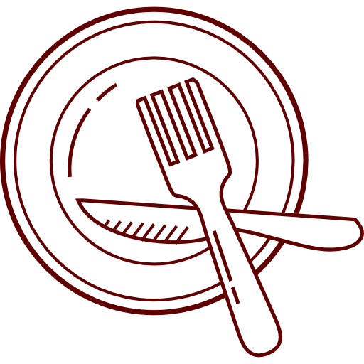

Coquetel Premium
Nosso serviço médio.
Tudo do coquetel simples é incluido nesse.
Além disso, esse serviço conta com um cardápio mais extenso.
Custa 60R$ por convidado!
e inclui o seguinte:
Nossas bebidas
Alcoólicas
- -Mojito: Rum, hortelã, limão, açúcar e água com gás.
- -Caipirinha: Cachaça, limão e açúcar.
- -Pina Colada: Rum, creme de coco e suco de abacaxi.
- -Gin Tônica: Gin e água tônica com limão.
- -Chopp: Cerveja não pausterizada servida em um barril.
- -Negroni: Gin, vermute rosso e Campari.
- -Moscow Mule: Vodka, gengibre, suco de limão e água com gás, servido em caneca de cobre.
- -Old Fashioned: Bourbon, açúcar, angostura e casca de laranja.
- -Margarita Clássica: Tequila, licor de laranja e suco de limão.
Drinks não alcoólicos
- -Virgin Mojito: Água com gás, limão, hortelã, açúcar.
- -Limonada Frutada: Suco de limão, água, açúcar, frutas.
- -Limonada Suiça: Suco de limão, água e leite condensado batido.
- -Pina Colada Sem Álcool: Suco de abacaxi, creme de coco.
- -Pineapple Ginger Sparkler: suco de abacaxi, água com gás, suco de gengibre, gelo
- -Citrus Fizz: suco de laranja, suco de limão, xarope de agave, água com gás, gelo
- -Cucumber Basil Cooler: pepino, manjericão, suco de limão, água tônica, gelo
- -Berry Lemonade Spritzer: limonada, purê de frutas vermelhas, água com gás, gelo
Sucos e Refris
- -Refrigerantes a base de cola ou frutas .
- -Sucos naturais, como laranja, abacaxi, uva, etc.
- -Água com gás

Pratos e Petiscos
Petiscos
- -Salames fatiados ou em cubos.
- -Bruschettas com tomate e manjericão.
- -Bruschetta de Foie Gras com Compota de Cebola
- -Tábua de Queijos Artesanais com Geléia de Pimenta
- -Salada de Melão com Presunto de Parma
- -Ceviche de Peixe Branco com Abacate
- -Mini quiches ou empadas.
- -Espetinhos de frango ou carne.
- -Batatas fritas ou chips de tortilla com guacamole.
- -Coxinhas de Jaca com Molho de Pimenta
- -Rissóis de Camarão com Molho de Limão
- -Bolinho de Bacalhau com Azeitonas Pretas
Pratos
- -Risoto de Cogumelos Trufados
- -Peito de Pato com Molho de Frutas Vermelhas
- -Filé Mignon ao Molho de Vinho Tinto
- -Lasanha de Ragu de Cordeiro
Sobremesas
- -Frutas (como uvas, morangos e melancia).
- -Mini sobremesas, como mousse ou brigadeiros.
- -Fatias de bolo (Chocolate, Morango, Ninho, Brigadeiro ou Trufado).
- -Panna Cotta de Baunilha com Coulis de Frutas Vermelhas
- -Tarte Tatin de Pera com Sorvete de Baunilha
- -Mousse de Chocolate Amargo com Crocante de Nozes
- -Cheesecake de Frutas Tropicais